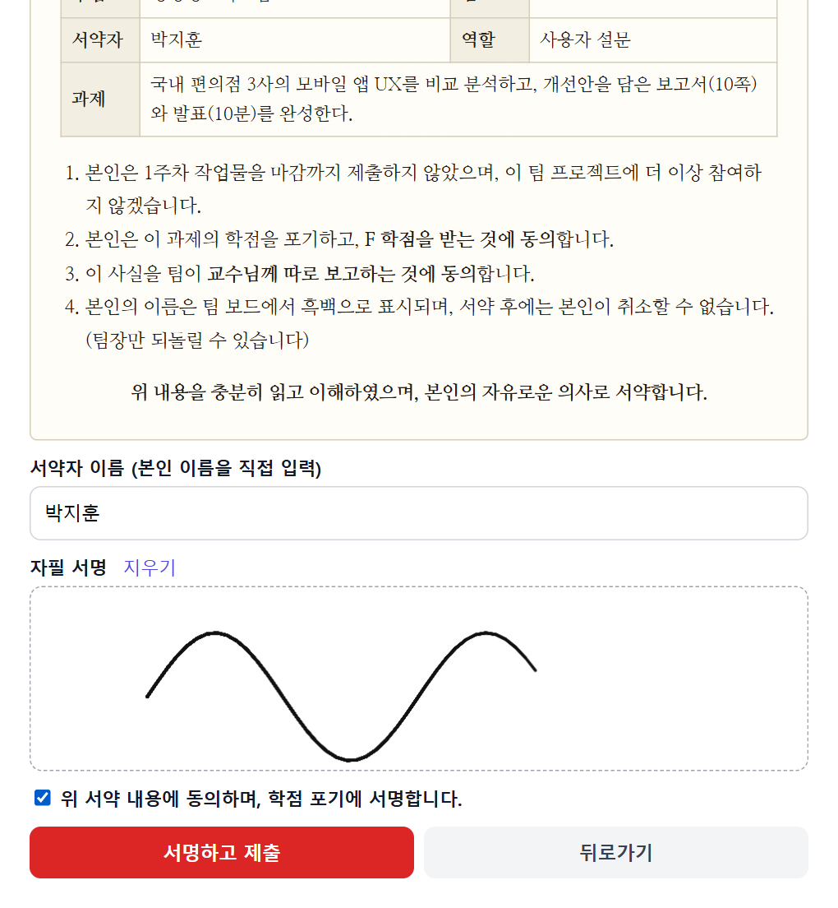

③ 어떻게 풀었나 — 서약 · 주간 증명 · 팝업
매주 작업물로 기여를 증명하게 만든다
1. 팀 등록수업·팀원·과제 입력
→ AI가 역할과 주차별 목표 설계
→ AI가 역할과 주차별 목표 설계
→
2. 매주 제출작업물 업로드
→ AI가 검토·판정
→ AI가 검토·판정
→
3. 미제출 팝업"팀플에 참여하지
않으시겠습니까?"
않으시겠습니까?"
→
4. 서약아니요 = 하루 연장
예 = 학점 포기 서약서 서명
예 = 학점 포기 서약서 서명

마감이 지나면 들어오자마자 팝업

학점 포기 동의 서약서 + 자필 서명 → 이름 흑백 처리
팀플 서약3